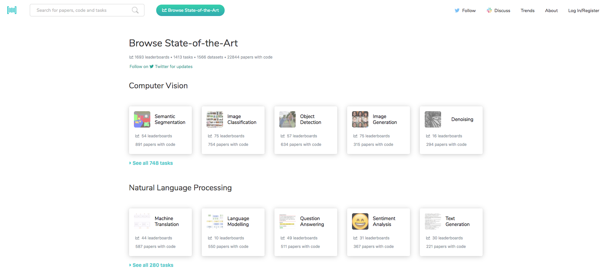
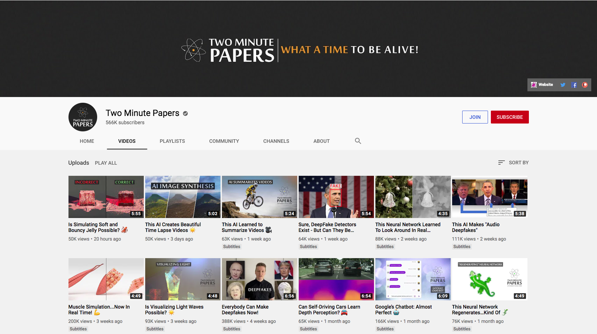
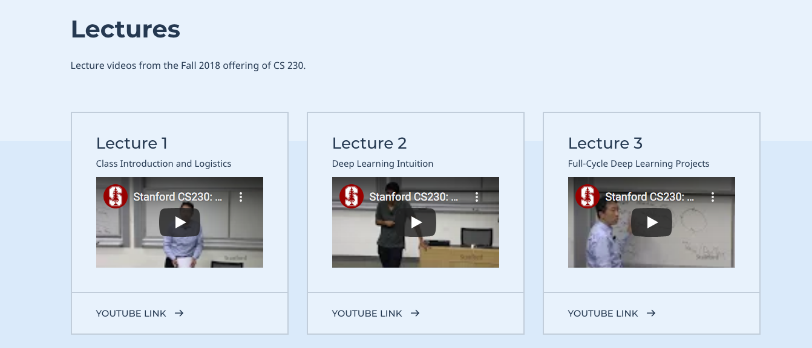
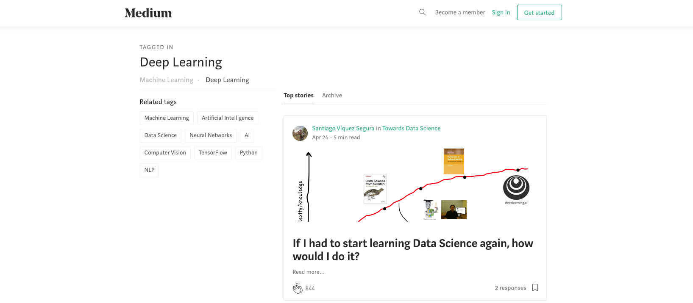
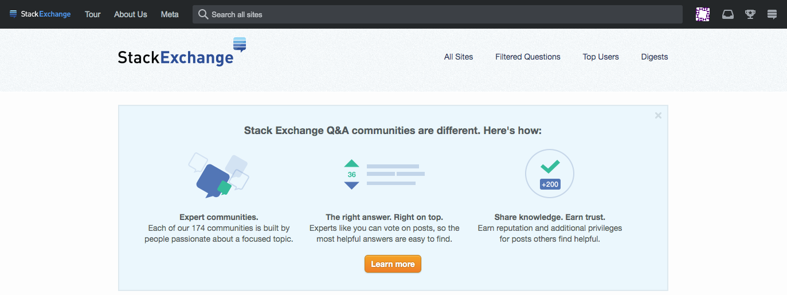
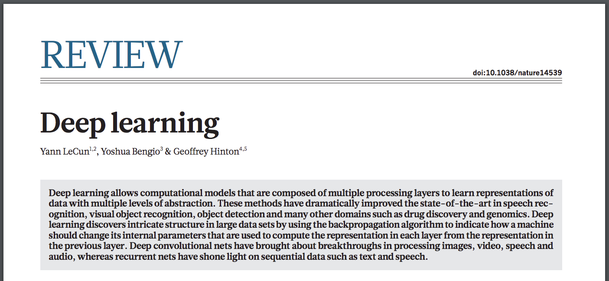
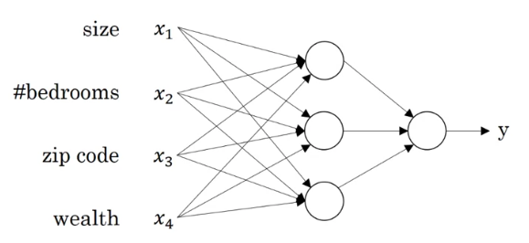

Deep Learning from Scratch
Week 2
Course starts soon..
QUIZ
We will start now with a quiz based on the first week material
You have 6 minutes to answer the quiz.
The quiz link:
Quiz Link
It will be copied in Mattermost and in the Zoom chat.
RESOURCES
In case you need more material, you can check out these websites:
Please add on our Mattermost Chat if have more ideas!
Papers with Code
Two Minute Papers Videos
Stanford Deep Learning Course
Medium Articles
The Deep Learning Book
It is availabe in HTML format on the website.
A PDF version was created on Github
Community Exchange
The largest community for Q&A.
Paper of the Week
Deep Learning, Y. LeCunn, Y. Bengio and G. Hinton,
Nature, 2015
Feed Forward Neural Network
Quiz (10 Minutes)
Open Source Project of the Week
Listen to the Music
Create your own Music
For the next week